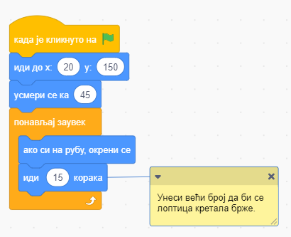
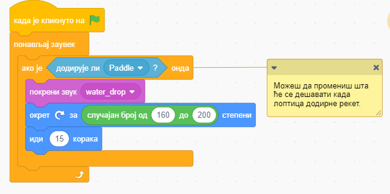
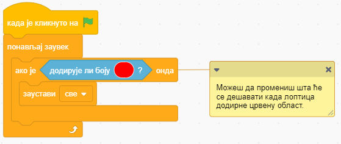
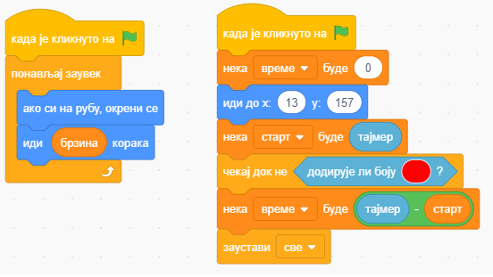
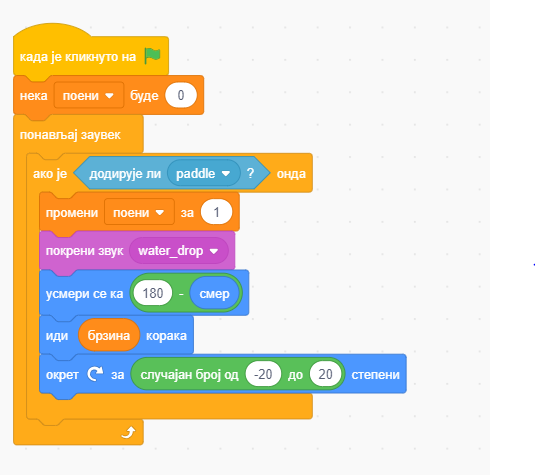
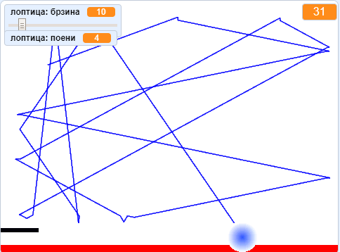

<!DOCTYPE html>
<html xmlns="http://www.w3.org/1999/xhtml" lang=""></html>
  <head>
    <meta charset="utf-8" />
    <meta name="viewport" content="width=device-width, initial-scale=1.0" />
<title>Предлог пројекта - Ремикс игре Понг &#8212; Петља - Пројектни задаци за пети разред - рачунарство</title>
    <link rel="stylesheet" href="_static/pygments.css" type="text/css" />
    <link rel="stylesheet" href="_static/basic.css" type="text/css" />
    <link rel="stylesheet" type="text/css" href="_static/activecode.css" />
    <link rel="stylesheet" type="text/css" href="_static/codemirror.css" />
    <link rel="stylesheet" type="text/css" href="_static/qchoice.css" />
    <link rel="stylesheet" type="text/css" href="_static/clickable.css" />
    <link rel="stylesheet" type="text/css" href="_static/pytutor.css" />
    <link rel="stylesheet" type="text/css" href="_static/modal-basic.css" />
    <link rel="stylesheet" type="text/css" href="_static/datafile.css" />
    <link rel="stylesheet" type="text/css" href="_static/dragndrop.css" />
    <link rel="stylesheet" type="text/css" href="_static/fitb.css" />
    <link rel="stylesheet" type="text/css" href="_static/matrixeq.css" />
    <link rel="stylesheet" type="text/css" href="_static/parsons.css" />
    <link rel="stylesheet" type="text/css" href="_static/lib/prettify.css" />
    <link rel="stylesheet" type="text/css" href="_static/poll.css" />
    <link rel="stylesheet" type="text/css" href="_static/showEval.css" />
    <link rel="stylesheet" type="text/css" href="_static/tabbedstuff.css" />
    <link rel="stylesheet" type="text/css" href="https://stackpath.bootstrapcdn.com/bootstrap/4.2.1/css/bootstrap.min.css" />
    <link rel="stylesheet" type="text/css" href="_static/video.css" />
    <link rel="stylesheet" type="text/css" href="_static/webgldemo.css" />
    <link rel="stylesheet" type="text/css" href="_static/webglinteractive.css" />
    <link rel="stylesheet" type="text/css" href="_static/karel.css" />
    <link rel="stylesheet" type="text/css" href="_static/notes.css" />
    <link rel="stylesheet" type="text/css" href="_static/gallery.css" />
    <link rel="stylesheet" type="text/css" href="_static/associations.css" />
    <link rel="stylesheet" type="text/css" href="_static/editor.css" />
    <link rel="stylesheet" href="_static/user-highlights.css" type="text/css" />
    <link rel="stylesheet" href="https://use.fontawesome.com/releases/v5.1.1/css/all.css" type="text/css" />
    <link rel="stylesheet" href="_static/bootstrap-4.0.0-dist/css/bootstrap.min.css" type="text/css" />
    <link rel="stylesheet" href="_static/flatly.min.css" type="text/css" />
    <link rel="stylesheet" href="_static/petlja-runestone.css" type="text/css" />
    <script id="documentation_options" data-url_root="./" src="_static/documentation_options.js"></script>
    <script type="text/javascript" src="_static/runestonebase.js"></script>
    <script type="text/javascript" src="_static/skulpt.min.js"></script>
    <script type="text/javascript" src="_static/skulpt-stdlib.js"></script>
    <script type="text/javascript" src="_static/jquery.js"></script>
    <script type="text/javascript" src="_static/underscore.js"></script>
    <script type="text/javascript" src="_static/doctools.js"></script>
    <script type="text/javascript" src="_static/language_data.js"></script>
    <script type="text/javascript" src="_static/jquery.highlight.js"></script>
    <script type="text/javascript" src="_static/bookfuncs.js"></script>
    <script type="text/javascript" src="_static/codemirror.js"></script>
    <script type="text/javascript" src="_static/xml.js"></script>
    <script type="text/javascript" src="_static/css.js"></script>
    <script type="text/javascript" src="_static/python.js"></script>
    <script type="text/javascript" src="_static/htmlmixed.js"></script>
    <script type="text/javascript" src="_static/javascript.js"></script>
    <script type="text/javascript" src="_static/jquery_i18n/CLDRPluralRuleParser.js"></script>
    <script type="text/javascript" src="_static/jquery_i18n/jquery.i18n.js"></script>
    <script type="text/javascript" src="_static/jquery_i18n/jquery.i18n.messagestore.js"></script>
    <script type="text/javascript" src="_static/jquery_i18n/jquery.i18n.fallbacks.js"></script>
    <script type="text/javascript" src="_static/jquery_i18n/jquery.i18n.language.js"></script>
    <script type="text/javascript" src="_static/jquery_i18n/jquery.i18n.parser.js"></script>
    <script type="text/javascript" src="_static/jquery_i18n/jquery.i18n.emitter.js"></script>
    <script type="text/javascript" src="_static/jquery_i18n/jquery.i18n.emitter.bidi.js"></script>
    <script type="text/javascript" src="_static/activecode-i18n.en.js"></script>
    <script type="text/javascript" src="_static/activecode.js"></script>
    <script type="text/javascript" src="_static/clike.js"></script>
    <script type="text/javascript" src="_static/timed_activecode.js"></script>
    <script type="text/javascript" src="_static/animationbase.js"></script>
    <script type="text/javascript" src="_static/mchoice.js"></script>
    <script type="text/javascript" src="_static/timedmc.js"></script>
    <script type="text/javascript" src="_static/timed.js"></script>
    <script type="text/javascript" src="_static/mchoice-i18n.en.js"></script>
    <script type="text/javascript" src="_static/clickable.js"></script>
    <script type="text/javascript" src="_static/timedclickable.js"></script>
    <script type="text/javascript" src="_static/d3.v2.min.js"></script>
    <script type="text/javascript" src="_static/jquery.ba-bbq.min.js"></script>
    <script type="text/javascript" src="_static/jquery.jsPlumb-1.3.10-all-min.js"></script>
    <script type="text/javascript" src="_static/pytutor.js"></script>
    <script type="text/javascript" src="_static/codelens.js"></script>
    <script type="text/javascript" src="_static/skulpt.min.js"></script>
    <script type="text/javascript" src="_static/skulpt-stdlib.js"></script>
    <script type="text/javascript" src="_static/datafile.js"></script>
    <script type="text/javascript" src="_static/dragndrop.js"></script>
    <script type="text/javascript" src="_static/timeddnd.js"></script>
    <script type="text/javascript" src="_static/dragndrop-i18n.en.js"></script>
    <script type="text/javascript" src="_static/fitb.js"></script>
    <script type="text/javascript" src="_static/timedfitb.js"></script>
    <script type="text/javascript" src="_static/fitb-i18n.en.js"></script>
    <script type="text/javascript" src="_static/matrixeq.js"></script>
    <script type="text/javascript" src="_static/lib/prettify.js"></script>
    <script type="text/javascript" src="_static/lib/hammer.min.js"></script>
    <script type="text/javascript" src="_static/parsons.js"></script>
    <script type="text/javascript" src="_static/parsons-i18n.en.js"></script>
    <script type="text/javascript" src="_static/timedparsons.js"></script>
    <script type="text/javascript" src="_static/poll.js"></script>
    <script type="text/javascript" src="_static/reveal.js"></script>
    <script type="text/javascript" src="_static/shortanswer.js"></script>
    <script type="text/javascript" src="_static/timed_shortanswer.js"></script>
    <script type="text/javascript" src="_static/showEval.js"></script>
    <script type="text/javascript" src="_static/tabbedstuff.js"></script>
    <script type="text/javascript" src="_static/runestonevideo.js"></script>
    <script type="text/javascript" src="_static/webglinteractive.js"></script>
    <script type="text/javascript" src="_static/FileSaver.min.js"></script>
    <script type="text/javascript" src="_static/Blob.js"></script>
    <script type="text/javascript" src="_static/karelCorner.js"></script>
    <script type="text/javascript" src="_static/karelRobot.js"></script>
    <script type="text/javascript" src="_static/karelWorld.js"></script>
    <script type="text/javascript" src="_static/karelChat.js"></script>
    <script type="text/javascript" src="_static/karelRobotDrawer.js"></script>
    <script type="text/javascript" src="_static/karelUI.js"></script>
    <script type="text/javascript" src="_static/karel.js"></script>
    <script type="text/javascript" src="_static/karel-i18n.en.js"></script>
    <script type="text/javascript" src="_static/notes.js"></script>
    <script type="text/javascript" src="_static/pygamelib-init.js"></script>
    <script type="text/javascript" src="_static/gallery.js"></script>
    <script type="text/javascript" src="_static/associations.js"></script>
    <script type="text/javascript" src="_static/associations-i18n.en.js"></script>
    <script type="text/javascript" src="_static/editor.js"></script>
    <script type="text/javascript" src="_static/jszip.js"></script>
    <script type="text/javascript" src="_static/editor-i18n.en.js"></script>
    <script async="async" type="text/javascript" src="https://cdnjs.cloudflare.com/ajax/libs/mathjax/2.7.5/latest.js?config=TeX-AMS-MML_HTMLorMML"></script>
    <script type="text/javascript" src="_static/jquery-ui-1.10.3.custom.min.js"></script>
    <script type="text/javascript" src="_static/jquery-fix.js"></script>
    <script type="text/javascript" src="_static/bootstrap-4.0.0-dist/js/bootstrap.min.js"></script>
    <script type="text/javascript" src="_static/bootstrap-4.0.0-dist/js/bootstrap.bundle.min.js"></script>
    <script type="text/javascript" src="_static/bootstrap-sphinx.js"></script>
    <script type="text/javascript" src="_static/waypoints.min.js"></script>
    <script type="text/javascript" src="_static/rangy-core.js"></script>
    <script type="text/javascript" src="_static/rangy-textrange.js"></script>
    <script type="text/javascript" src="_static/rangy-cssclassapplier.js"></script>
    <script type="text/javascript" src="_static/user-highlights.js"></script>
    <script type="text/javascript" src="_static/jquery.idle-timer.js"></script>
    <script type="text/javascript" src="_static/processing-1.4.1.min.js"></script>
    <script type="text/javascript" src="_static/jquery.hotkey.js"></script>
    <script type="text/javascript" src="_static/jquery-migrate-1.2.1.min.js"></script>
    <script type="text/javascript" src="_static/petlja_ruenstone.js"></script>
    <link rel="index" title="Index" href="genindex.html" />
    <link rel="search" title="Search" href="search.html" />
    <link rel="next" title="Предлог пројекта - Положаји градова" href="11_projekat_polozaji_gradova.html" />
    <link rel="prev" title="О изради пројеката" href="02_o_projektima.html" />
    <meta charset='utf-8'>
    <meta http-equiv='X-UA-Compatible' content='IE=edge,chrome=1'>
    <meta content='width=device-width, initial-scale=1.0, maximum-scale=1.0, user-scalable=0' name='viewport' />
    <script type="text/javascript">
      eBookConfig = {};
      eBookConfig.host = 'http://127.0.0.1:8000' ? 'http://127.0.0.1:8000' : 'http://127.0.0.1:8000';
      eBookConfig.app = eBookConfig.host + '/runestone';
      eBookConfig.ajaxURL = eBookConfig.app + '/ajax/';
      eBookConfig.course = '5_projzad_racunarstvo_scratch';
      eBookConfig.logLevel = '0';
      eBookConfig.loginRequired = 'false';
      eBookConfig.build_info = "";
      eBookConfig.isLoggedIn = false;
      eBookConfig.useRunestoneServices = false;
      eBookConfig.python3 = true;
      eBookConfig.basecourse = '5_projzad_racunarstvo_scratch';
      eBookConfig.runestone_version = '';
      eBookConfig.imagesDir = '_images/';
      eBookConfig.staticDir = '_static/';
      if (typeof (Sk) != "undefined")
        Sk.imgPath = eBookConfig.imagesDir;
    </script>

  </head><body>


<!-- Begin navbar -->

<nav id="navbar" class="navbar navbar-default navbar-fixed-top" role="navigation">

  <div class="container">

    <div class="navbar-header" style="width: 10%;margin-top: 20px;">
      <button type="button" class="navbar-toggle collapsed" data-toggle="collapse" data-target="#bs-example-navbar-collapse-1">
        <span class="sr-only">Toggle navigation</span>
        <span class="icon-bar"></span>
        <span class="icon-bar"></span>
        <span class="icon-bar"></span>
      </button>
      
    </div>

    <div class="collapse navbar-collapse" id="bs-example-navbar-collapse-1" style="margin-top: 10px; margin-left: 25px;">
      <ul class="nav navbar-nav " style="width: 90%;">
        <li class="active"><a style="text-align: center;" href="./">Петља - Пројектни задаци за пети разред - рачунарство</a></li>
      </ul>
    </div>
  </div>
</nav>


<div class="container col-md-12" id="continue-reading"></div>

<div class="container col-md-8 col-md-offset-2" id="main-content" style="margin-top: 100px;">
  
  <div class="section" id="id1">
<h1>Предлог пројекта - Ремикс игре Понг<a class="headerlink" href="#id1" title="Permalink to this headline">¶</a></h1>
<div class="section" id="id2">
<h2>Мотивација<a class="headerlink" href="#id2" title="Permalink to this headline">¶</a></h2>
<p>За почетак предлажемо да направиш своју верзију игре тако што ћеш надоградити неку већ постојећу. Кликом на дугме <em>Идеје</em> на Скречовом сајту можеш да видиш приручнике, смернице за активности и примере почетничких пројеката. Један од њих је игра <em>Понг</em> коју смо изабрали као први предлог пројекта.</p>

    <div class="note-wrapper infonote-type">
        <div class="note-icon-holder"> </div>
         
        <div class="course-content">
            
<p>Циљ овог пројекта је да направиш Скреч програм који ће бити занимљив и теби и твојим другарима. Кроз његово прављење истражићеш шта ти нуди Скречова подршка и упознати нове могућности програмског језика Скреч. За почетак погледај приручник <a class="reference external" href="https://scratch.mit.edu/projects/editor/?tutorial=pong">Pong Tutorial</a>.</p>

    </div></div>
</div>
<div class="section" id="id3">
<h2>Сценарио пројекта<a class="headerlink" href="#id3" title="Permalink to this headline">¶</a></h2>
<p>Пројекат <em>Понг</em> је игра у којој играч мишем помера рекет лево-десно трудећи се да спречи да лоптица падне на земљу. У игри се користе ликови лопта (ball), рекет (paddle) и позорница са позадином “neon tunnel” којој је додата црвена линија у доњем делу. Игра се завршава када лоптица додирне ту црвену линију.</p>
<p>Покрени игру <a class="reference external" href="https://scratch.mit.edu/projects/10128515/">Pong Starter</a> са Скречовог сајта и одиграј неколико партија да би разумео како ради.</p>
</div>
<div class="section" id="id4">
<h2>Анализа и планирање<a class="headerlink" href="#id4" title="Permalink to this headline">¶</a></h2>
<p>Из упутства за игру можеш видети савете Скречовог тима како да направиш ремикс овог програма.</p>
<p>Затим погледај пројекат изнутра. Видећеш да су лику лоптица придружене три скрипте које описују њено понашање када се кликне на зелену заставицу. Прва описује кретање лоптице уз напомену да се повећањем броја у наредби “иди … корака” кретање убрзава.</p>
<a class="reference internal image-reference" href="_images/pong_1.png"></a>
<p>Друга описује шта ће се десити када лоптица додирне рекет уз напомену да у телу наредбе “ако је … онда” можеш да промениш шта ће се дешавати.</p>
<a class="reference internal image-reference" href="_images/pong_2.png"></a>
<p>Трећа описује шта ће се десити када лоптица додирне црвену боју уз напомену да и овде можеш да промениш шта ће се дешавати.</p>
<a class="reference internal image-reference" href="_images/pong_3.png"></a>
<p>Лику рекет придружена је само једна скрипта која му задаје да заувек прати <em>х</em> координату показивача миша.</p>
<p>Позорници није придружена ни једна скрипта, али ако кликнеш на картицу <em>Позадине</em> видећеш да су јој, осим позадине “neon tunnel”, придружене још две, обе са црвеном линијом у доњем делу.</p>
<p>Твој први задатак је да измениш пројекат “Pong Starter” тако што ћеш у игру додати променљиве.</p>
<p>Други задатак је да наставиш надоградњу игре тако што ћеш испрограмирати да лоптица оставља траг при кретању, да се мења угао под којим ће се лоптица одбијати и да се време трајања игре приказује као цео број.</p>
<div class="section" id="id5">
<h3>Ресурси<a class="headerlink" href="#id5" title="Permalink to this headline">¶</a></h3>
<p>За различите верзије ремикса игре <em>Понг</em> можеш да измениш изгледе ликова и позадине и додаш нове звучне и графичке ефекте додиру лоптице и рекета и додиру лоптице и црвене линије. Можеш да додаш и позадине које одговарају почетку рада, завршетку рада када играч изгуби игру и завршетку рада када победи.</p>
</div>
<div class="section" id="id6">
<h3>Скрипте и променљиве<a class="headerlink" href="#id6" title="Permalink to this headline">¶</a></h3>
<p>Како се помоћу променљивих игра може начинити занимљивијом?</p>
<ul class="simple">
<li><p>Прво, променљива може да регулише брзину кретања лоптице. Код нас је то променљива <strong>брзина</strong>.</p></li>
<li><p>Друго, променљива може да мери време игре до момента промашаја лоптице. Код нас је то променљива <strong>време</strong>.</p></li>
<li><p>Треће, променљива може да броји поене за сваку успешно одбијену лоптицу. Код нас је то променљива <strong>поени</strong>.</p></li>
</ul>
<p>На следећим сликама су приказане скрипте за лоптицу које користе променљиве.</p>
<a class="reference internal image-reference" href="_images/pong_4.png"></a>
<a class="reference internal image-reference" href="_images/pong_5.png"></a>
<p>Како се могу остварити захтеви друге надоградње?</p>
<ul class="simple">
<li><p>Да би се видело како се лоптица креће, у скрипти која проверава да ли је лоптица дотакла црвену боју треба додати  инструкцију “обриши” из групе <em>Оловка</em>, а у скрипти која описује понашање лоптице пошто додирне рекет инструкцију “спусти оловку” из исте групе наредби.</p></li>
<li><p>Треба променити опсег вредности за угао под којим лоптица може да се одбија.</p></li>
<li><p>Променљива <strong>време</strong> приказује се као цео број коришћењем операције “заокружи”.</p></li>
<li><p>Вредност променљиве <strong>брзина</strong> која је локална за лик лоптица може се задавати преко монитора променљиве са клизачем.</p></li>
</ul>
<p>На следећој слици је приказан изглед позорнице по завршетку овако измењеног програма.</p>
<a class="reference internal image-reference" href="_images/pong_6.png"></a>
<div class="line-block">
<div class="line"><br /></div>
</div>
<p>Покушај да реализујеш и следеће идеје за надоградњу.</p>
<ul class="simple">
<li><p>Подеси да се рекет води стрелицама лево и десно.</p></li>
<li><p>Направи верзију у којој лоптица иде лево-десно, а рекет горе-доле.</p></li>
<li><p>Направи верзију игре за два играча.</p></li>
</ul>
</div>
</div>
<div class="section" id="id7">
<h2>Самоевалуација<a class="headerlink" href="#id7" title="Permalink to this headline">¶</a></h2>
<p>Када направиш програм, покушај да (пре свега себи) одговориш на ова питања:</p>
<ul class="simple">
<li><p>Да ли је, по твојој процени, пројекат успешно приведен крају? Колико си ти лично задовољан/задовољна урађеним? Зашто?</p></li>
<li><p>Који део је био посебно тежак? Како си га решио/решила? Да ли је постојао неки проблем чијим решавањем се посебно поносиш?</p></li>
<li><p>Да ли је било накнадних измена првобитног плана? Због чега?</p></li>
<li><p>Да ли је пројекат био користан за стицање или унапређивање неких знања или вештина? Којих?</p></li>
</ul>
<p>Размисли шта од овога би било интересантно другима да чују током твог представљања пројекта.</p>
</div>
</div>


  
      <div class="col-md-12">
<ul class="pager">
        <li id="relations-prev" title='Previous chapter - О изради пројеката' data-toggle="tooltip"><a href="02_o_projektima.html">Previous chapter</a></li>
    
        <li id="relations-next" title='Next chapter - Предлог пројекта - Положаји градова' data-toggle="tooltip"><a href="11_projekat_polozaji_gradova.html">Next chapter</a></li>
</ul>

<!-- <ul class="pager"> -->
    <!-- -->
        <!-- <li id="relations-prev" title='Претходно поглавље - О изради пројеката' data-toggle="tooltip"><a href="02_o_projektima.html">Претходно поглавље</a></li> -->
    <!--  -->
    <!-- -->
        <!-- <li id="relations-next" title='Следеће поглавље - Предлог пројекта - Положаји градова' data-toggle="tooltip"><a href="11_projekat_polozaji_gradova.html">Следеће поглавље</a></li> -->
    <!-- -->
<!-- </ul> -->

<script type="text/javascript">

  $('#relations-prev').tooltip({'placement':'right', 'selector': '', 'delay': { show: 100, hide: 50}});
  $('#relations-next').tooltip({'placement':'left', 'selector': '', 'delay': { show: 100, hide: 50}});

</script>
</div>
  
</div>
<footer class="footer col-md-12">
    <div class="container">
        <div class="text-center">
            <hr>
            <p class="text-muted">
                <span class="pull-left">&copy; 2022 Petlja (Created using  <a href="https://pypi.org/project/Sphinx/">Swinx</a>, <a href="http://runestoneinteractive.org/">RunestoneComponents</a> and <a href="https://github.com/Petlja/PetljaDoc">PetljaDoc</a>)</span>
            </p>
        </div>
    </div>
</footer>


<script type="text/javascript">
  var _gaq = _gaq || [];
  _gaq.push(['_setAccount', 'UA-32029811-1']);
  _gaq.push(['_trackPageview']);

  (function() {
    var ga = document.createElement('script'); ga.type = 'text/javascript'; ga.async = true;
    ga.src = ('https:' == document.location.protocol ? 'https://ssl' : 'http://www') + '.google-analytics.com/ga.js';
    var s = document.getElementsByTagName('script')[0]; s.parentNode.insertBefore(ga, s);
  })();
</script>


  </body>
</html>